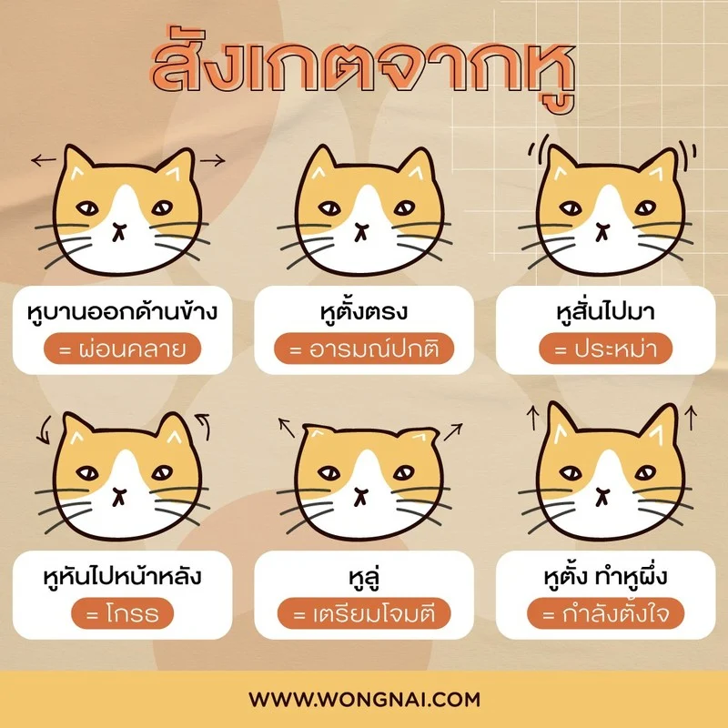
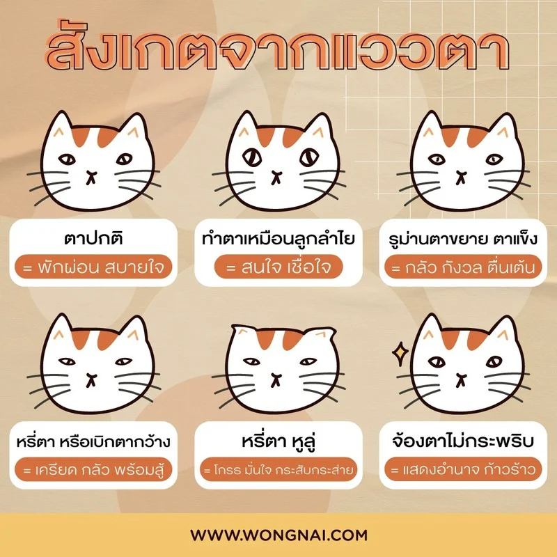
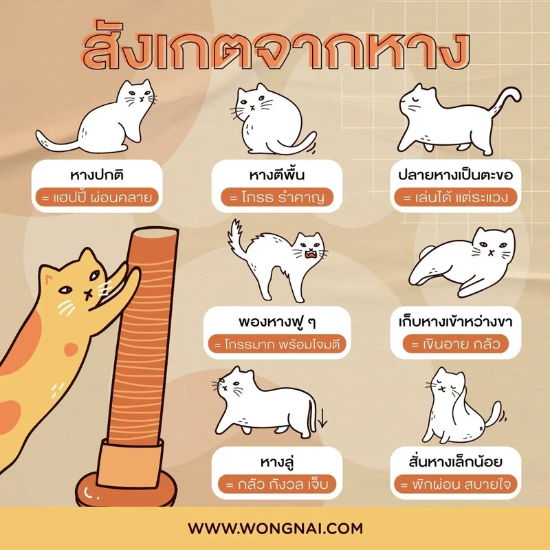
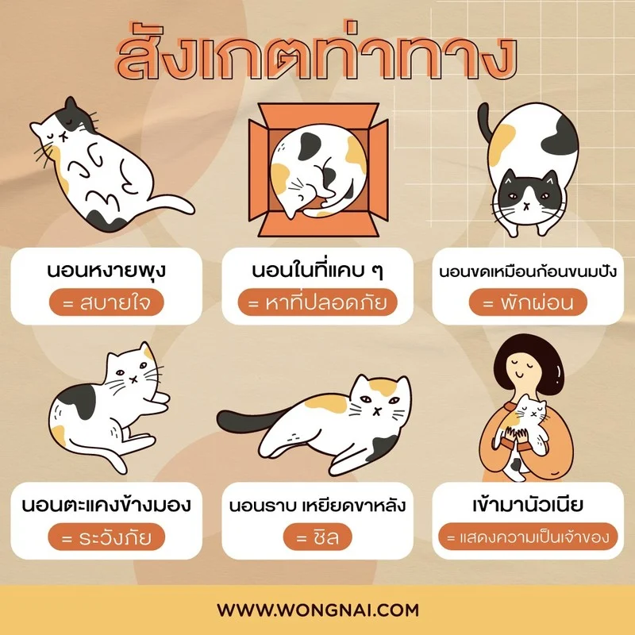

แมวเป็นสัตว์ที่มีประสาทหูดีมาก สามารถได้ยินเสียงที่ความถี่ 40 – 65,000 Hz เลยทีเดียว ซึ่งคนสามารถรับเสียงได้สูงสูดแค่ 20,000 Hz เท่านั้น เพราะว่ามีประสาทรับเสียงที่ดี แมวจึงมักจะชอบอยู่ในที่เงียบ ๆ สงบ ไม่ชอบความวุ่นวายหรือเสียงดัง ๆ นอกจากนี้ แมวยังแสดงอาการผ่านหูได้อีกด้วย วิธีสังเกตท่าทางน้องแมวจากหู ก็อย่าง เช่น


นอกจากหูแล้ว การสังเกตท่าทางน้องแมวจากหางก็สำคัญไม่แพ้กัน หางของแมวมักจะมีเส้นประสาทเชื่อมต่อไปถึงสมองของแมว ถ้าดึงหางแมวแรง ๆ อาจจะทำให้แมวเป็นอัมพาตได้เลย แถมอาจจะส่งผลต่อระบบขับถ่ายของแมวอีกด้วย ถ้าใครที่เลี้ยงแมวและเลี้ยงเด็กด้วย อาจจะต้องระวัง หรือสอนไม่ให้เด็กดึงหางแมวแรง ๆ และการสังเกตท่าทางจากหางน้องแมว เป็นการสังเกตอารมณ์แมวได้ชัดเจนที่สุด
